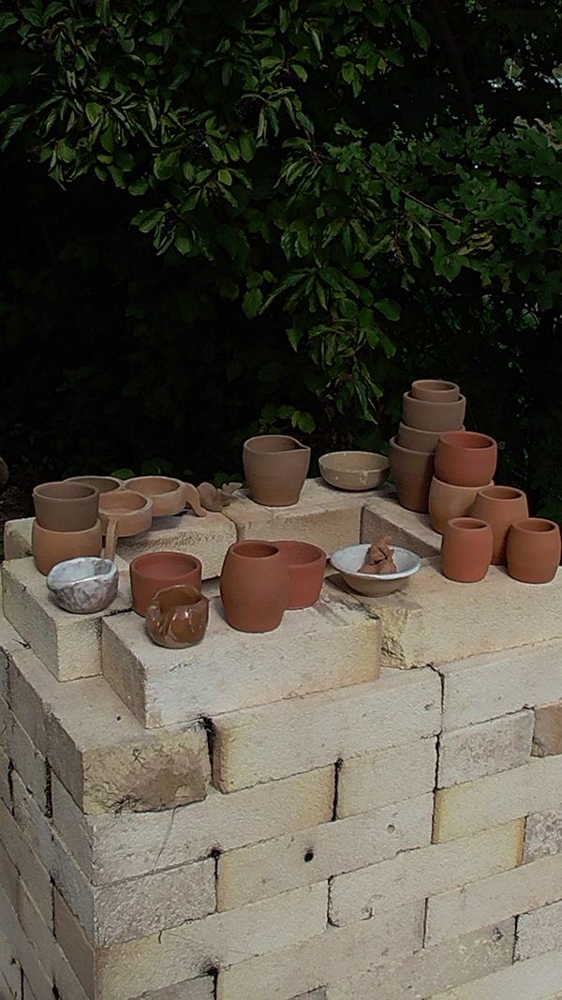
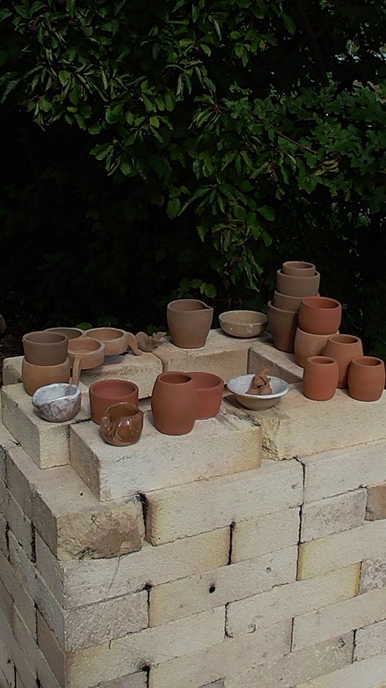

2022 . Cotignola, Emilia Romagna, primo forno a legna
Con Oscar cuocevamo a legna in un forno che era una bomba; siccome avanzavano dei mattoni, ne abbiamo voluto costruire un altro, piccino, per le prove.
Bastano mattoni refrattari di buona qualità, un po' di attrezzi o un amico fabbro, e del buonsenso. Perché io e Baptiste, che non avevamo mai costruito un forno, e non avevamo mai tagliato dei tubi di ferro, e non avevamo mai segato dei mattoni, ci siamo ritrovati a fine giornata con un cubotto tanto bellino, che non vedeva l'ora di essere riempito e di arrossire e bruciare di contentezza. Ogni tanto Oscar ci dava un'occhiata e un consiglio.
Il giorno dopo siamo arrivati con i bicchieri miei - frutto delle terre raccolte negli ultimi mesi e del mio scarso esercizio al tornio - e le sculture di Baptiste, e l'abbiamo riempito. Ci abbiamo messo qualche esperimento di terra sigillata, qualche smalto ricavato dalla pulizia di cabine a spruzzo altrui, e un ciotolino con del guscio d'uovo macinato, chissà che il calcio contenuto nell'uovo non possa servire a qualche cosa in ceramica.
L'abbiamo acceso, e bruciava effettivamente di contentezza: fino ai 500 gradi abbiamo dovuto tenerlo buono, o si sarebbe sbafato tutta la legna e avrebbe scalato la curva di cottura con due balzi; credevamo che il più fosse fatto, ma da ai 600 era diventato insaziabile, e abbiamo cercato di placare il suo appetito dandogli tanta legna, ma non bastava mai e la temperatura saliva lenta; e aprivamo un po' la canna fumaria, e la chiudevamo un po', e c'erano gran fiammate che ne uscivano, e poi aprivamo anche qualche bottiglia di vino.
Ci ha dato i 1035 gradi solo alle 23.15 della sera, dopo una cottura di nove ore, grandi feste e una gran voglia di doccia.
La mattina lo abbiamo aperto, e abbiamo tirato fuori i pezzi, sono uscite cose brutte, meno brutte, anche belline, ma tutte interessanti, tutte raccontavano la loro esperienza tra le fiamme.
 
